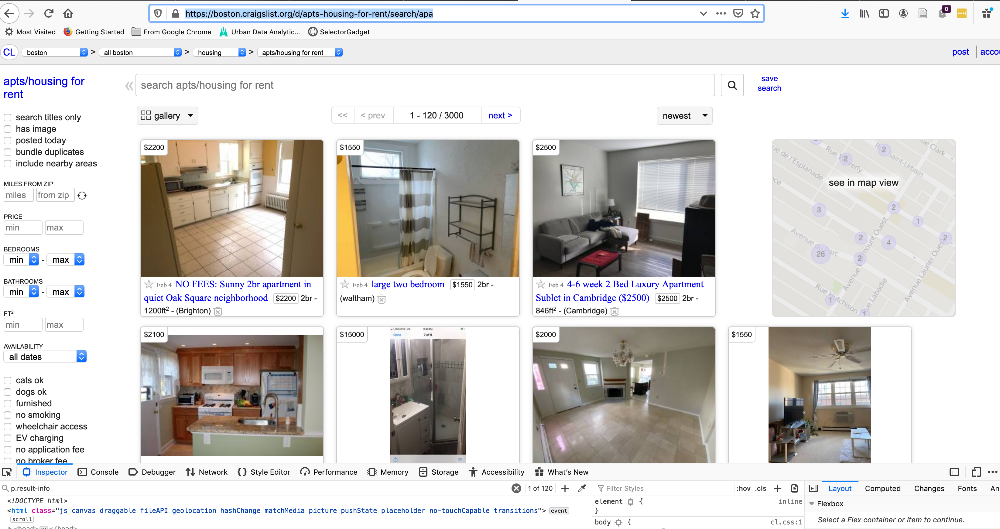
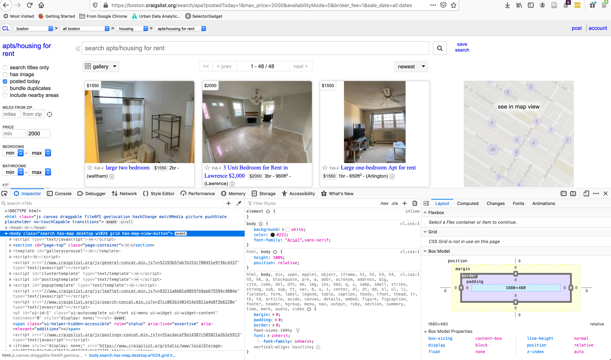
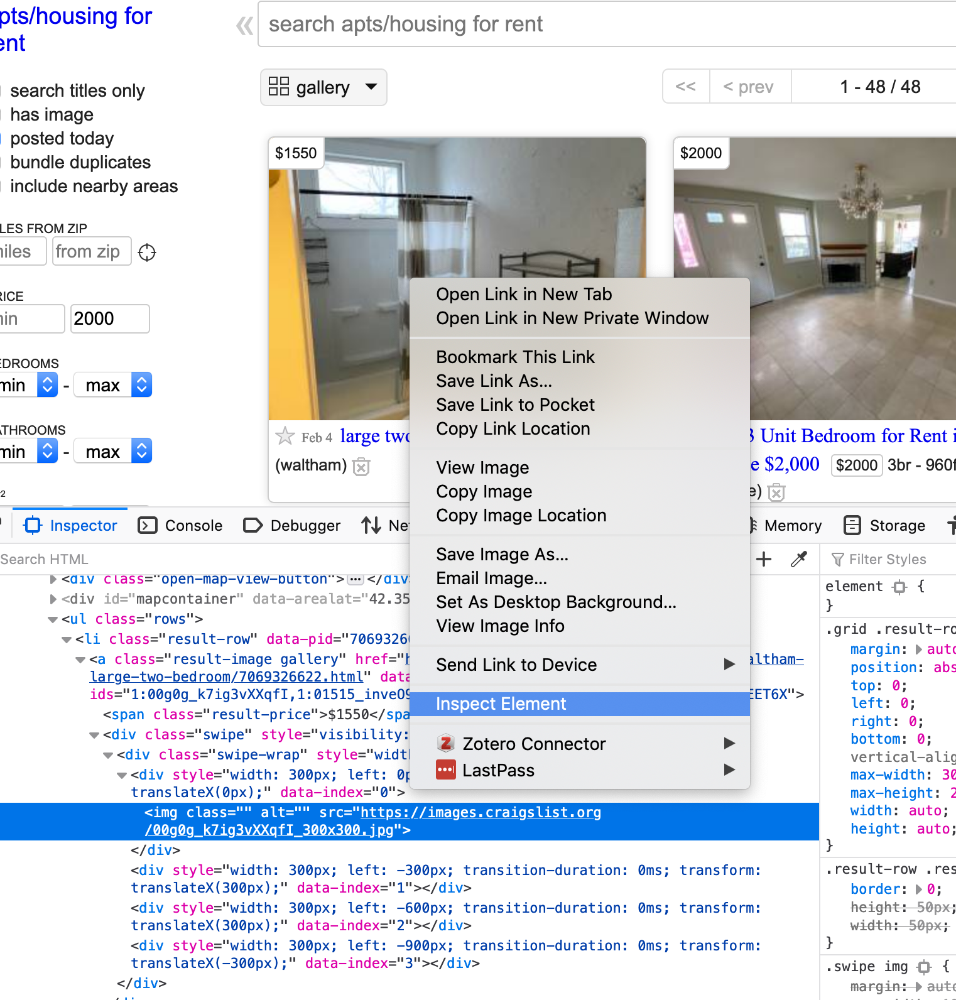
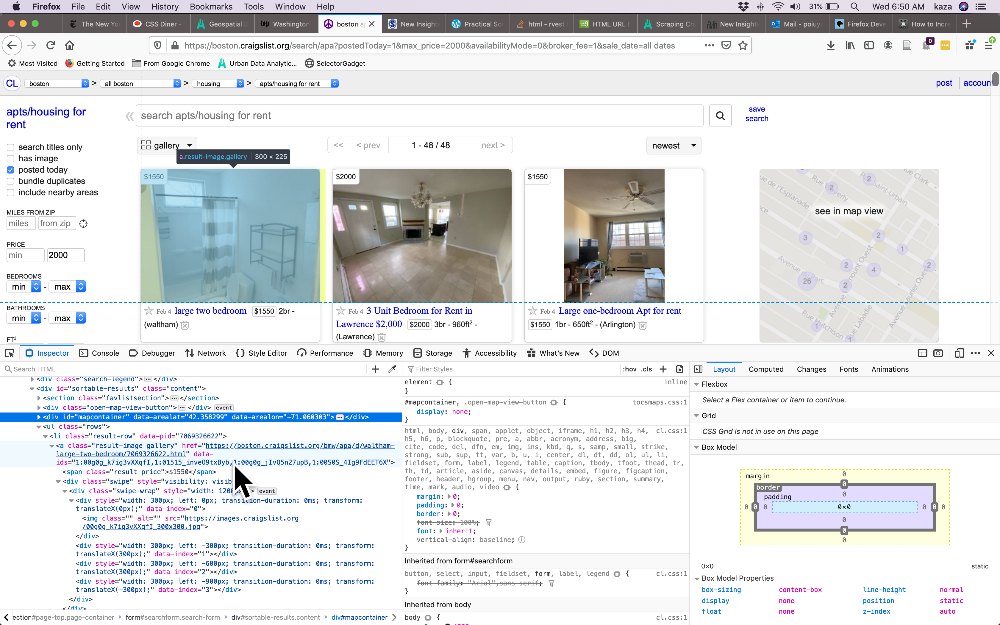
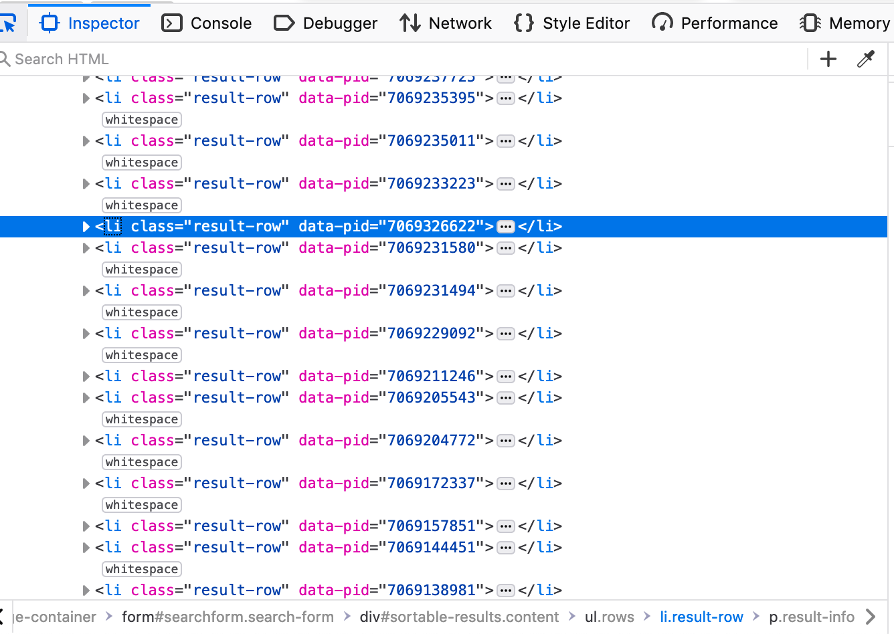

Scraping Craigslist Posts
 Boeing, G. and P. Waddell. 2017. “New Insights into Rental Housing Markets across the United States: Web Scraping and Analyzing Craigslist Rental Listings.” Journal of Planning Education and Research, 37 (4), 457-476. doi:10.1177/0739456X16664789
Boeing, G. and P. Waddell. 2017. “New Insights into Rental Housing Markets across the United States: Web Scraping and Analyzing Craigslist Rental Listings.” Journal of Planning Education and Research, 37 (4), 457-476. doi:10.1177/0739456X16664789
Getting Started
When the data is unstructured or seemingly unstructured, we can still use R to create some structure. In this post I am going to demonstrate how to scrape a html page to extract the relevant information and convert them into a table for further analysis. In this particular example, we want to use Craigslist. Usual disclaimers about data retrieval and storage apply. Please consult a lawyer, especially if you use the data for non-research purposes. Also you can follow along the evolving landscape of the media law on this topic.
Additional Resources
Munzert, Simon, Christian Rubba, Peter Meißner, and Dominic Nyhuis. 2014. Automated Data Collection with R: A Practical Guide to Web Scraping and Text Mining. 1 edition. Chichester, West Sussex, United Kingdom: Wiley.
Pittard, Steve. 2019. Web Scraping with R.
Understanding the structure of the query
In this post, I am going to demonstrate how to scrape and assemble the rental listings in Boston. To start, it is useful to use your browser to access the webpage.
https://boston.craigslist.org/d/apts-housing-for-rent/search/apa
The results should look like this

On the left hand corner, you will notice that there are forms that you can use limit the search results. For example,
https://boston.craigslist.org/search/apa?postedToday=1&max_price=2000&availabilityMode=0&broker_fee=1&sale_date=all+dates
refers to a search with
- “posted today” is checked
- “maximum price” is “2000 usd”
- “availability” is set to “all dates”
- “no broker fee” is checked
- “open house date” is set to “all dates”
Few things to note.
- Cities are subdomains. i.e. if you need to information about Raleigh, you need to use
https://raleigh.craigslist.org/ - The second bit of it
/d/apts-housing-for-rent/search/apais same for all cities but will change if you want to scrape something other than apartments. - The browser uses a
httpsprotocol instead of ahttpprotocol. This is more secure, but ocassionally poses problems for accessing the web usingcurlinstead of a browser. cURL is a command-line tool for getting or sending data including files using URL syntax often used explcitly within scripts that are used for webscraping. - The arguments start after
?. - Match the options checked on the browser to the variables in the url and the values they take. For example,
postedTodayandbroker_feeare set to 1 when corresponding boxes are checked. - Variables are concatenated using
&in the url string. - It looks like the spaces in
all datesare replaced with a+. Usually they are replaced by%20a hexadecimal code for space. It is useful to understand the hex codes for special characters.
Based on the understanding of the above url, we can use conventional string manipulation to construct the url in R as follows.
library(tidyverse)
library(rvest)
library(leaflet)
location <- 'boston'
bedrooms <- 2
bathrooms <- 2
min_sqft <- 900
baseurl <- paste0("https://", location, ".craigslist.org/search/apa")
# Build out the query
queries <- c("?")
queries <- c(queries, paste0("bedrooms=", bedrooms))
queries <- c(queries, paste0("bathrooms=", bathrooms))
queries <- c(queries, paste0("minSqft=", min_sqft))
query_url <- paste0(baseurl,queries[1], paste(queries[2:length(queries)], collapse = "&"))Exercise
Try out the different urls and understand how the query to the server works. i.e. try different cities, different types of ads and different arguments to the queries. It is useful to construct different urls by typing them out so that you understand the syntax.
Figuring out the structure of the results
An url request to the server usually results in an HTML page that is rendered in the browser. In other posts, we have seen how the URL may result in JSON objects which are much easier to deal with to create a structured dataset. But HTML pages are often with some structure that are used to render the page. Sometimes, we can take advantage of that structure to infer and extract what we need.
To examine the structure, we will have to use the developer tools in the web browser. In the rest of the tutorial, I am going to use Firefox as a browser, though analogous tools can be found for other browsers. You can open the Firefox Developer Tools from the menu by selecting Tools > Web Developer > Toggle Tools or use the keyboard shortcut Ctrl + Shift + I or F12 on Windows and Linux, or Cmd + Opt + I on macOS.

The most useful thing for this exercise is the page inspector, usually in the bottom left. You can right click on any post in the craigslist result page and use inspect element to understand what the structure looks like. Or alternately, you can point to various elements in the inspector and see different elements highlighted in the browser window.


In this particular instance each posted ad seems to be within a list, with a list element <li> with a class result-row, with a data-pid associated with it.

That is our way in to scraping and structuring the data. To take advantage of the HTML elements, you need to become somewhat familiar with css selectors. You can use a fun game to get started.
Using rvest to extract data from html
The workhorse functions we are going to use are html_nodes and html_node from the rvest library. html_node always extracts exactly one element. In this instance we want to extract all elements that are of result.row class
raw_query <- xml2::read_html(query_url)
raw_query
# {html_document}
# <html class="no-js">
# [1] <head>\n<meta http-equiv="Content-Type" content="text/html; charset=UTF-8 ...
# [2] <body class="search has-map">\n <script type="text/javascript"><!--\n ...
## Select out the listing ads
raw_ads <- html_nodes(raw_query, "li.result-row")
raw_ads %>% head()
# {xml_nodeset (6)}
# [1] <li class="result-row" data-pid="7070092132">\n\n <a href="https:/ ...
# [2] <li class="result-row" data-pid="7069988793">\n\n <a href="https:/ ...
# [3] <li class="result-row" data-pid="7069976094">\n\n <a href="https:/ ...
# [4] <li class="result-row" data-pid="7069947008">\n\n <a href="https:/ ...
# [5] <li class="result-row" data-pid="7069879830">\n\n <a href="https:/ ...
# [6] <li class="result-row" data-pid="7069870509">\n\n <a href="https:/ ...In the following bit of code, I extract the entire list of attributes that are part of each result-row. In particular, I want to extact id, title, price, date and locale. Notice how each of them require some special manipulation to get into a right format.
ids <-
raw_ads %>%
html_attr('data-pid')
titles <-
raw_ads %>%
html_node("a.result-title") %>%
html_text()
prices <-
raw_ads %>%
html_node("span.result-price") %>%
html_text() %>%
str_extract("[0-9]+") %>%
as.numeric()
dates <-
raw_ads%>%
html_node('time') %>%
html_attr('datetime')
locales <-
raw_ads %>%
html_node(".result-hood") %>%
html_text() Exercise
Notice the different functions
html_attrandhtml_textthat are used in different situations. Can you explain which is used when?Create a vector of sq.ft and number of bedrooms for these ads
We are treading dangerously here. Notice that we are assuming that each of these ads have same attributes that we can extact and are in the same places within the document and are properly encoded. It is always a good idea to spot check some of these results. In particular, an easy check is to see if the lengths of these variables are the same. If they are, then more likely than not, we can column bind them into a table. If they are not, there is some error and it is likely that the prices wont match up with the descriptions or the number of bedrooms. I will leave that as an exercise, as to how you will spot and recover from these errors.
Extracting location attributes
Location of the apartments/houses are little bit more tricky because they are not embedded in the results page, but in each individual ad. To access them we need to access individual urls for the ads and then extract the location attributes.
To do this we use the map_* function in purrr package. The function is effectively like a for loop. So the following code for each of the element of urls use the function(x) and then combine them into a table using row binding.
urls <-
raw_ads %>%
html_node(".result-title") %>%
html_attr("href")
latlongs <-
map_dfr(urls, function(x){
xml2::read_html(x) %>%
html_node("#map") %>%
html_attrs() %>%
t() %>%
as_tibble() %>%
select_at(vars(starts_with("data-"))) %>%
mutate_all(as.numeric)
}
)
latlongs
# # A tibble: 120 x 3
# `data-latitude` `data-longitude` `data-accuracy`
# <dbl> <dbl> <dbl>
# 1 42.4 -71.1 22
# 2 42.6 -70.9 10
# 3 42.4 -71.1 10
# 4 42.3 -71.1 10
# 5 42.3 -71.2 10
# 6 42.7 -71.1 5
# 7 42.7 -71.1 5
# 8 42.7 -71.2 22
# 9 42.4 -71.1 10
# 10 42.6 -71.2 22
# # … with 110 more rowsExercise
- It is useful to go through each step of the function and see why they result in the lat longs finally.
Now we are ready to combine them all into one table and visualise the results.
craigslist_table <- cbind(ids, titles, dates, locales, urls, latlongs, prices)
leaflet(craigslist_table) %>%
addProviderTiles(providers$Stamen.TonerLines, group = "Basemap") %>%
addProviderTiles(providers$Stamen.TonerLite, group = "Basemap") %>%
addCircles(lat = ~`data-latitude`, lng = ~`data-longitude`, label = paste(craigslist_table$ids, craigslist_table$locales, craigslist_table$prices, sep=",")
)Exercise
If you remove all the filters from the url, there are more than 120 results. Craigslist only displays 120 results per page. Figure out how to loop through various pages to extract all the results. The more quickly you ping the server with your queries, you will run afoul of rate limits and may raise some eyebrows in San Francisco. Use
Sys.sleepto slow down the query rate.Repeat this for few other metropolitan areas, such as Los Angeles and Raleigh.
Cautions & Conclusions
Scraping the web to create a structured dataset is as much an art as it is a technical exercise. It is about figuring out the right combinations of searches and manipulations that will get you right result. And because there are no documentation and manuals, it is imperative to experiment with it and fail. And you will fail often. The webpages change their structure over time and the code that might work one week may not work the next. The webpages themselves are dynamic and therefore the dataset that you generate may not be replicable. All these should be taken into account when you are scraping the web for data and conducting your analyses.